NDVI - теория и [практика]
Практические примеры применения NDVI
С теоретической основой индекса NDVI можно ознакомиться в статье "Теория".
 MODIS, 06.2002. Читинская область и Республика Бурятия.
MODIS, 06.2002. Читинская область и Республика Бурятия.
Комплексная оценка биоресурсов региона.
Расчет NDVI на основе снимков низкого и среднего разрешения позволяет
эффективно решать задачи комплексного анализа территории, на уровне регионов
(Забайкалье). Помимо выделяющихся зон степей и горных тундр, четко выделяються
участки высокопродуктивных лиственничных и сосновых лесов бассейна Амура
и Шилки, резко отличающихся от основной массы северотаежных лесов болот
(соответственно темно и светло зеленые участки на индексированном изображении).
По светлым пятнам (желтый цвет) в центральных областях (бассейн Витима)
можно проследить мозаику зарастающих гарей.
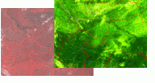MODIS,
06.2002. Центр Зап-Сибирского региона: Ханты-Мансийский АО, Тюменская,
Томская и др. области.
Комплексная оценка биоресурсов региона.
Аналогичный предыдущему пример. Расчет индекса позволяет выделить зоны высокопродуктивных сосновых лесов по западносибирским увалам (темно зеленый), еловых лесов (светло зеленых) по возвышенности Нумто и низкопродуктивные болотные массивы, слабо разделяющиеся на исходном изображении.
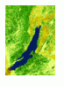MODIS,
04.2000. Иркутская область и республика Бурятия.
Оценка продуктивности лесов.
Прямая связь индекса и продуктивности позволяет широко использовать NDVI для решения лесохозяйственных задач. Широкий охват снимков MODIS дает возможность производить сравнительную оценку лесохозяйственных предприятий целых областей, а так же качественнее планировать лесхозяйственные мероприятия. В данном случае расчет NDVI позволил выделить лесные участки Предбайкалья обладающие наиболее благоприятными для произрастания хвойных пород эколого-климатическими характеристиками (темнозеленые).
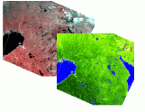MODIS,
05.2002. Северо-Запад, Карельский перешеек.
Оценка эффективности ведения лесного хозяйства.
Данный пример результатов анализа, напротив позволяют оценить качество уже проведенных лесохозяйственных работ. Значительный градиент продуктивности лесных насаждений (в основном сосновых) на границе территорий Республики Карелии и Финляндии отражает принципиальную разницу подходов к методам посадки и уходу за лесными культурами.
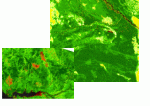IRS
Liss-3 06.2001. Амурская область, Зейское водохранилище.
MODIS, 08.2001. Республика Якутия-САХА.
Картирование последствий лесных пожаров и анализ качества их восстановления.
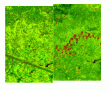Landsat,
ETM+, 08.2000 - 06.2001. Архангельская область, Холмогорский район.
Мониторинг лесных рубок.
Легкость и быстрота расчета NDVI дают возможность использования его для мониторинга последствий лесных пожаров и сплошных рубок. Контрастность границ получаемых выделов позволяет рассчитывать и анализировать площади, а изменяющийся показатель NDVI -оценивать скорость и полноту зарастания.
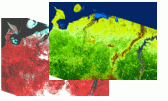MODIS
06.2001. Архангельская область, Ненецкий АО, Республика Коми, Ямало-Ненецкий
АО.
Оценка и мониторинг северной границы леса.
Практические работы доказали тесную корреляцию вегетационного индекса
с лесистостью на северном пределе распространения лесов. Эта закономерность
может найти широкое применение для картирования, таксации и анализа при
тундровых редколесных лесов - наименее изученных в лесохозяйственном отношении
территорий.
Отслеживание динамики изменения северной границы леса на основе NDVI позволило
бы разрешить ряд фундаментальных и прикладных эколого-климатических вопросов.
 Landsat,
ETM+, 08.2000. Республика Бурятия, хребет Хамар-Дабан.
Landsat,
ETM+, 08.2000. Республика Бурятия, хребет Хамар-Дабан.
Оценка урожайности недревесных лесных ресурсов.
В качестве непрямых корреляционных анализов, основанных на расчете NDVI, можно продемонстрировать моделирование урожайности кедрового ореха в районе Байкальского заповедника. Наиболее темные, из представленных - продуктивные участки кедровых насаждений, позволяющие их позиционировать, оценивать площадь, корреляцию и др. параметры.
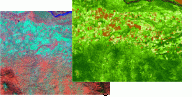Landsat,
ETM+, 08.2000. Республика Горный Алтай, Усть-Канский р-н.
Крупномасштабное картирование посевов и пастбищ.
Важнейшей областью применения NDVI остается область сельского хозяйства. Четкость обрисовки полей, высокая градиентность посевов и другие особенности отображения находят активное применение в землеустроительных, картографических и кадастровых работах.
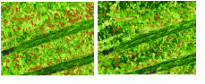 Landsat, ETM+, 07.1999 - 08.1999. Алтайский край, Мамонтовский р-н.
Мониторинг всходов сельхоз культур.
Динамические (разносезонные) карты NDVI позволяют также получать количественные оценки прогнозируемого урожая различных сельхозкультур, отмечать особенности сезонной вегетации, ее нарушения, оценивать качество проведенных сельхоз работ, производить планирование и т.д..
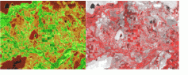IRS
Liss3 05.2000. Казахстан, Кзыл-Ординская обл., р.Сырдарья.
Оценка эффективности систем мелиорации.
По относительной продуктивности монодоминантных сельхозкультур культур можно оценивать состояние ирригационных и мелиоративных систем в регионах дефицита грунтового водного питания, выявляются аварии, грунтовая проточка вод и прочие нарушения.
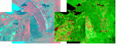Landsat,
ETM+, 07.2000 Приморский край, озеро Ханка.
Оценка урожайности рисовых чековых полей.
Задачи оценки урожайности рисовых посевов обычно представляет трудности, связанные с шумовым эффектом сигнала воды на затопляемых чеках. Построение индекса NDVI позволяет получать реальную продуктивность посевов и производить количественные оценки урожая.
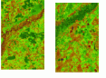IRS
Liss3 05 - 07.2000. Оренбургская область, Первомайский р-н.
Мониторинг использования сельхозземель, картографирование и анализ
залежных земель.
Данные изображения демонстрируют возможности использования NDVI для мониторинга реального использования земель, выявление заброшенных полей, оценка эффективности сельхоз оборота, отслеживание зарастания и закустаривания, слежение за эрозионными и другими динамическими процессами в зоне целинных земель.
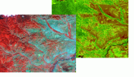Landsat,
ETM+, 08.2000. Республика Хакасия, Таштыпский р-н.
Оценка продуктивности пастбищ.
NDVI позволяет эффективно, с незначительными затратами решать одну из основных задач таксации пастбищ и выпасов в зоне активного животноводства: расчет продуктивности биомассы. В данном примере показан расчет вегетативного индекса для всех типов степных участков выпаса: от луговых до полупустынных петрофитных. Особенно четко выделяются также зоны перевыпаса (цвет - красно-коричневый).
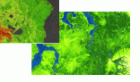Landsat,
ETM+, 08.2000. Восточное побережье полуострова Ямал, с\х Ямальский. 14-2
(ndvi). MODIS. 08.2001 Долгано-Ненецкий - Ямало-Ненецкий АО.
Оценка продуктивности оленьих пастбищ.
Аналогично определяется продуктивность тундровых оленьих пастбищ (кроме лишайниковых и моховых), как для выявления потенциальных мест выпаса (на индексированном изображении видны наиболее продуктивные кустарничковой тундры Гыданской гряды) так и для крупномасштабной таксации оленьих пастбищ, в границах хозяйств.
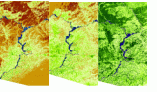MODIS.
10.04. - 22.04 - 08.05.2002. Волго-Вятский район.
Мониторинг снегового покрова.
Вегетационный индекс можно использовать и для мониторинга других, опосредованно связанных факторов. В данном случае, на трех последовательных изображениях можно наблюдать процессы схода снегового покрова на территории среднего течения реки Волги. Индексирование позволяет различать глубину снегового покрова (различные оттенки коричневых тонов), закономерности таяния, начальные стадии вегетации, насыщаемость почв паводковыми водами и др. параметры.
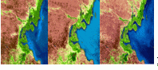Landsat,
ETM+, 08.1999 - 2000 - 2001. Калмыкия, Астраханская область.
MODIS 05.20002. Аральское море.
Мониторинг опустынивания и процессов засоления почв.
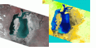Данные изображения демонстрируют процессы опустынивания: на трех последовательных снимках прослеживаются климатозависищие процессы сокращения продуктивности растительности и увеличения засоленных почв северо-западного побережья Каспийского моря. Яркую картину типов засоления дает расчет NDVI снимка усыхающего Арала.
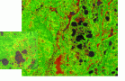Landsat,
ETM+, 06.2000. Ханты-Мансийский АО, Месторождение Саматлор, Ватьеганское.
Картографирование и мониторинг нефтяных месторождений, картирование
аварий и оценка их воздействий.
Эффективно применение индекса NDVI для идентификации угнетенной и погибшей растительности, продуктивность которой резко отличается от здоровой. Это находит широкое применение в мониторинге всевозможных стихийных бедствий, техногенных аварий и долговременных поражающих процессов.
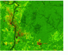Landsat,
ETM+, 09.1999. Республика Коми, Усинское нефтяное месторождение.
Оценка последствий воздействия аварий нефтепроводов на растительные
сообщества.
Случай применения расчета NDVI для оценки ущерба аварийного разлива нефти. Четко выделяются территории высохшей и погибшей лесной и болотной растительности (красно-коричневые цвета).
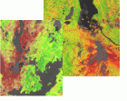 Landsat, ETM+, 07.2002. Мурманская область, окрестности г.Мончегорска.
17-2(ndvi). Landsat, ETM+, 06.2001. Красноярский край, окрестности г.Норильска.
Оценка и картографирование зон поражения растительности аэрозольными
химическими загрязнениями.
В данном случае вегетационный индекс позволяет выделить зоны поражения северных лесов выбросами горно-обогатительных предприятий. На обоих изображениях четко выделяются зоны мертвого и различных стадий угнетенного древостоя (красно-коричневые цвета).
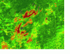IRS
Liss3, 07.2000. Кемеровская обл., Кузбасский угольный бассейн.
Анализ эффективности рекультивации на месте открытой добычи полезных
ископаемых.
Хорошие результаты, с помощью NDVI, дает оценка эффективности восстановления лесов на оголенных, вследствие открытой разработки, грунтах. В нижнем левом углу снимка просматриваются участки зарастания Березовского угольного разреза различных характеристик.
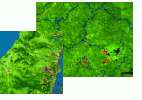Landsat,
ETM+, 07.2001. Камчатская обл. 25(ndvi). MODIS 07.2001. Тверская обл.
Оценка продуктивности охотничих угодий.
Для оценки больших площадей охотничьих угодий эффективно использовать расчет NDVI, представляющий количественные данные биомассы потенциальных травяных и веточных кормов. На примере индексации западного побережья п-ова Камчатки, можно проследить дифференциацию потенциальных кормовых мест бурого медведя: кедрового стланика, разнотравных березняков и кустарничковых болот.
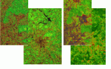Landsat,
TM, 06.1986. г. Москва
IRS, Liss3, 06.2001. г. Москва
Оценка и мониторинг зеленых зон городов.
Характерный пример мониторингового анализа изменения площади и характеристик древесных насаждений зеленых зон крупных населенных пунктов. Видны изменения лесистости в близости от МКАД, увеличение продуктивности смешанных хвойно-мелколиственных массивов Национального парка "Лосиный остров".
С теоретической основой индекса NDVI можно ознакомиться в статье "Теория".
Дата создания: 27.12.2002
Автор(ы): Максим Дубинин